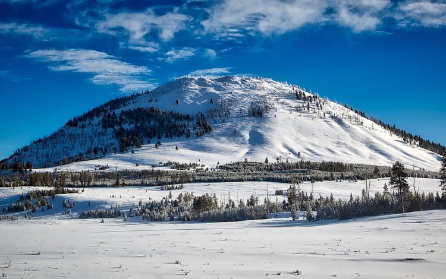

<div class="page no-tabbar">
  <!-- Search Bar with "searchbar-init" class for auto initialization -->
  <div class="searchbar whiteBackground">
    <div class="navbar-inner">
      <div class="left">
        <a href="#" class="back link">
          <i class="icon icon-arrow-left"></i>
          <span class="navLeft" style="line-height: 4vw;">Me</span>
        </a>
      </div>
      <div class="center sliding navHeader" style="padding-right: 5vw;">My Draft Trip</div>
      <div class="right"></div>
    </div>
  </div>

  <div class="searchbar-overlay"></div>

  <div class="page-content">

                <div class="custom-content" style="margin-top: 2vw;">
                    <div class="card">
                        <div class="card-content custom-card">
                            <div class="card-top">
                                <div class="top-image2"></div>
                                <div class="top-name">
                                    <div class="first-name">Roger Saanrinen</div>
                                    <div class="top-date">Jan 14</div>
                                </div>
                                <div class="top-right">
                                    <div class="top-tag" style="margin-top:10vw;">Tagged in Photography</div>
                                </div>

                            </div>
                            <a href="#">
                                
                            </a>
                            <div class="card-bottom">
                                <div class="bottom-location">Photo trip to Bunson Peak, Yellowstone in Winter</div>
                            </div>

                        </div>
                    </div>
                </div>

  </div>
</div> 